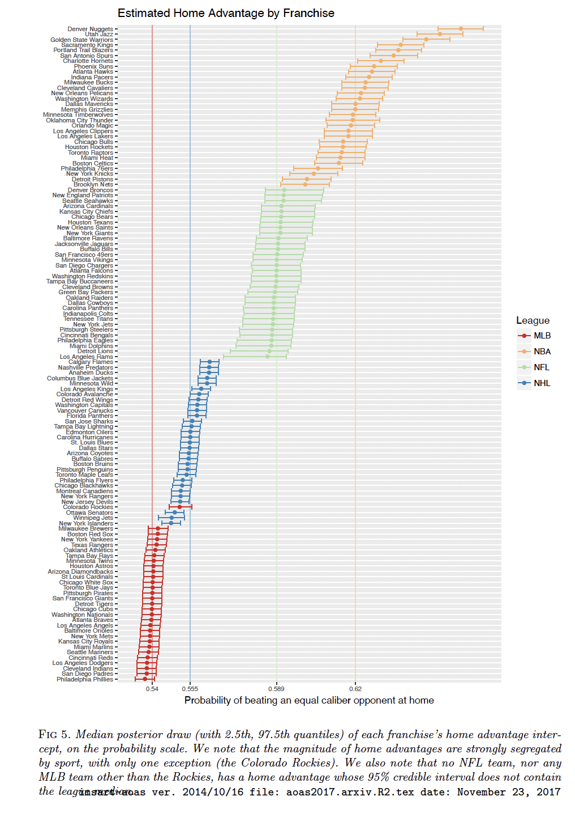
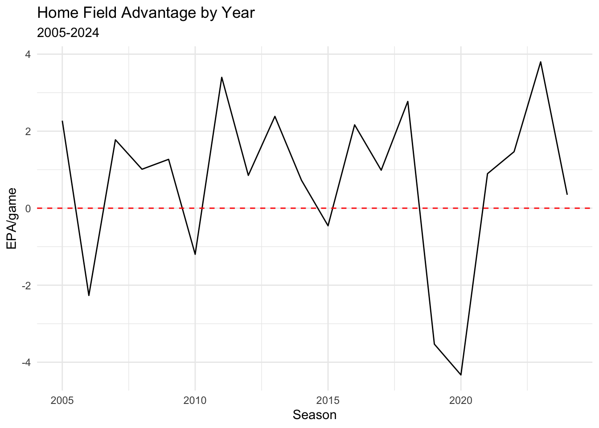
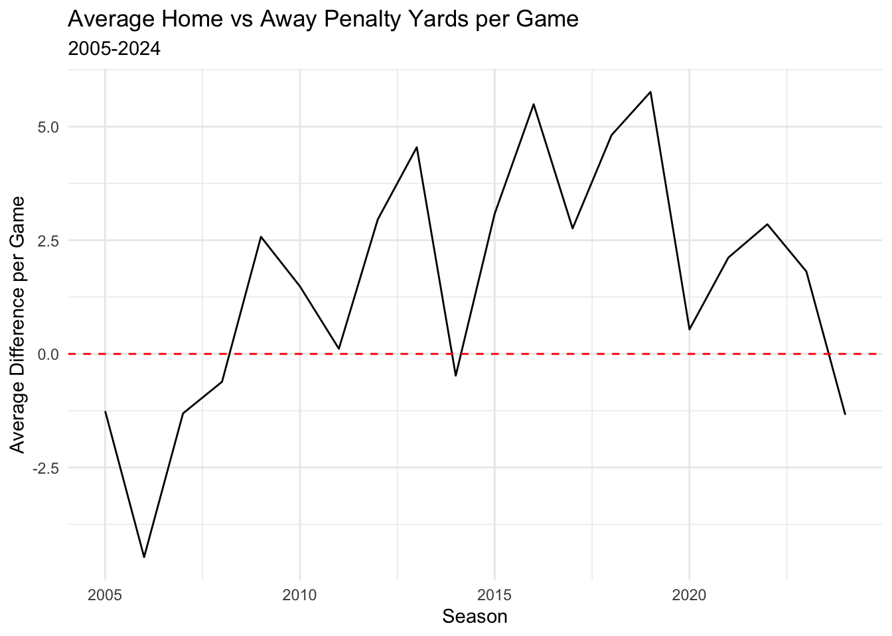
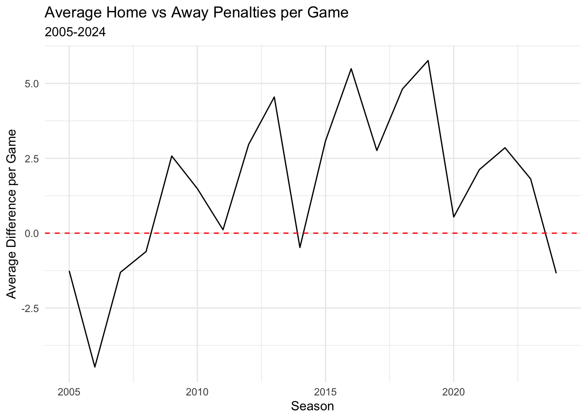

Introduction
In 2017 as faculty at Skidmore College, current Senior Director of Analytics of the NFL Michael Lopez wrote a paper with his coauthors Greg Matthews and Ben Baumer where they used gambling odds to determine how often the better team ends up winning across the four major North American sports. As a result of this paper, they estimated the individual home field advantage for each of the teams in four major sports leagues in North America. Overall the paper estimated the NFL to have the second largest home field advantage (after the NBA) of the four major professional North American sports.
While their Bayesian model ranked the home field advantage of each team, and found Denver (altitude anyone?) to have the highest posterior mean in each sport, for the NFL the 95% posterior intervals for all the teams overlapped, meaning the data was not indisputable that some teams have harder home fields than others.
I personally wrote on my blog in 2024 trying to estimate differences in college home field’s by fitting an expected points added (EPA) based power ranking with individual home field effects for each team as opposed to one overall one. This work found that the elite teams or typical “toughest” places to play as ranked by EA sport’s College Football video game franchise didn’t line up with the model because most of those toughest places to play in the video game were just the home fields of typically very good programs, not especially difficult crowds or stadiums (compared to any other college football stadium).
Such Bayesian power ranking based methods as mine or Lopez, Baumer, & Matthews 2017 paper can and will always rank a team’s home field advantage, but have a hard time finding in noisy game results posterior distributions of individual home field advantages that don’t overlap significantly.
Also in 2024 I looked at college basketball to see if you could do something similar. Like my college football work or the aforementioned “How often does the best team win?” paper, the number of teams with 95% posterior significance from an average home field advantage was right in line with what you would expect with multiple testing. But… I was able to show one specific aspect of home field advantage (free throws) were impacted in stadiums where the opposing student sections were directly behind the visiting team’s basket in the 2nd half.
Home Field Advantage by Year
The easiest way to estimate home field advantage by year is to build a model which accounts for the teams in each game, the scoring efficiences of each team, and the location of the game. This model can then be used to estimate the home field advantage for each year.
I will use expected points added (EPA) per play as the efficiency metric for each team in each game. I will use a Bayesian model to estimate the home field advantage for each year. I will ignore all QB kneels, spikes, and kickoffs in the model as these plays are not indicative of a team’s efficiency. The EPA model used is the one included with NFLFastR which is built via XGBoost. There may be better models out there, especially in edge situations, but this model is still very good and the most easy to access.
Now I will fit the model. In this format it acts like ridge regression, shrinking estimates to 0, which will be good for estimating season by season home field advantage and team effects. I will also put a spline on the difference for team rest, as I have found in the past that the effect of rest is not linear. Be sure to include separate team effects for offense and defense for each season.
Here are the model’s estimated effects for the home team for 70 plays on offense in a game by season. Remember this is the effect of playing at home vs neutral, so home vs road would be double this effect for the offensive plays, but 4 times it for home vs away for all plays in a game.
| Season | EPA vs Neutral 70 Plays | EPA vs Road per Game |
|---|---|---|
| 2005 | 0.57 | 2.27 |
| 2006 | −0.57 | −2.27 |
| 2007 | 0.44 | 1.78 |
| 2008 | 0.25 | 1.01 |
| 2009 | 0.32 | 1.27 |
| 2010 | −0.30 | −1.20 |
| 2011 | 0.85 | 3.40 |
| 2012 | 0.21 | 0.85 |
| 2013 | 0.60 | 2.38 |
| 2014 | 0.18 | 0.73 |
| 2015 | −0.11 | −0.46 |
| 2016 | 0.54 | 2.16 |
| 2017 | 0.25 | 0.99 |
| 2018 | 0.69 | 2.77 |
| 2019 | −0.88 | −3.53 |
| 2020 | −1.08 | −4.33 |
| 2021 | 0.22 | 0.90 |
| 2022 | 0.37 | 1.47 |
| 2023 | 0.95 | 3.80 |
| 2024 | 0.09 | 0.35 |
The nfl is really a pretty small sample size each season, so there shouldn’t be a surprise it fluctuates in estimates the way it does, but overall we can see that there is a home field advantage over the long run.

So there is a home field, but it does fluctuate year to year. There are various theories as to what causes it but one such one is that the away team gets rattled or the ref calls more penalties on them. Let’s dive in.
Causes of Home Field Advantage
Now I want to look at the different play types in the NFL. I am going to focus on penalties. I will look at the different types of plays to familiarize myself with them in order to focus penalties.
| Play Type | Play Type (NFL) | n |
|---|---|---|
| extra_point | XP_KICK | 25266 |
| field_goal | FIELD_GOAL | 20772 |
| field_goal | UNSPECIFIED | 1 |
| kickoff | FREE_KICK | 1 |
| kickoff | KICK_OFF | 54603 |
| kickoff | RUSH | 2 |
| no_play | FREE_KICK | 22 |
| no_play | KICK_OFF | 198 |
| no_play | PENALTY | 46896 |
| no_play | TIMEOUT | 38466 |
| no_play | UNSPECIFIED | 2578 |
| no_play | XP_KICK | 102 |
| pass | FUMBLE_RECOVERED_BY_OPPONENT | 391 |
| pass | INTERCEPTION | 9744 |
| pass | PASS | 356662 |
| pass | PAT2 | 1316 |
| pass | SACK | 25052 |
| pass | UNSPECIFIED | 199 |
| punt | PUNT | 48408 |
| punt | UNSPECIFIED | 42 |
| qb_kneel | RUSH | 8127 |
| qb_kneel | UNSPECIFIED | 1 |
| qb_spike | PASS | 1544 |
| qb_spike | UNSPECIFIED | 1 |
| run | PASS | 3 |
| run | PAT2 | 493 |
| run | RUSH | 283682 |
| run | UNSPECIFIED | 351 |
| NA | COMMENT | 728 |
| NA | END_GAME | 5412 |
| NA | END_QUARTER | 16556 |
| NA | GAME_START | 5412 |
| NA | KICK_OFF | 1 |
| NA | TIMEOUT | 1 |
| NA | UNSPECIFIED | 179 |
It is clear that the only denotation of a penalty is in the play_type_nfl column. First I need to make sure this isn’t only penalties accepted but also penalties given (but declined).
# A tibble: 12 × 2
play_type_nfl n
<chr> <int>
1 FIELD_GOAL 72
2 FREE_KICK 23
3 FUMBLE_RECOVERED_BY_OPPONENT 12
4 INTERCEPTION 509
5 KICK_OFF 2770
6 PASS 4815
7 PENALTY 45973
8 PUNT 4821
9 RUSH 4635
10 SACK 332
11 UNSPECIFIED 2593
12 XP_KICK 510I know what to know what fields there are corresponding to penalties already in the dataset.
| first_down_penalty | penalty | penalty_team | penalty_player_id | penalty_player_name | penalty_yards | penalty_type |
|---|---|---|---|---|---|---|
| 0 | 1 | ARI | NA | NA | 5 | Illegal Shift |
| 0 | 1 | ARI | 00-0020533 | L.Davis | 5 | False Start |
| 0 | 1 | NYG | 00-0019276 | S.O'Hara | 10 | Offensive Holding |
| 0 | 1 | NYG | 00-0021265 | N.Greisen | 10 | Offensive Holding |
| 0 | 1 | ARI | 00-0023510 | E.Green | 5 | Offside on Free Kick |
| 1 | 1 | ARI | 00-0022927 | K.Dansby | 6 | Illegal Use of Hands |
| 0 | 1 | NYG | 00-0019276 | S.O'Hara | 5 | False Start |
| 0 | 1 | ARI | 00-0023443 | A.Rolle | 5 | Offside on Free Kick |
| 0 | 1 | ARI | 00-0012333 | C.Okeafor | 5 | Defensive Offside |
| 1 | 1 | NYG | 00-0020006 | A.Pierce | 2 | Defensive Pass Interference |
A really quick exploratory data analysis would be to look and see the average penalties and penalty yards per game for a team at home vs away in a season in the NFL.
| season | posteam | Avg Penalties (Away) | Avg Penalties (Home) | Avg Penalty Yards (Away) | Avg Penalty Yards (Home) | Home vs Away Penalties | Home vs Away Penalty Yards | |
|---|---|---|---|---|---|---|---|---|
| 1.0 | 2024 | CAR | 5.6 | 8.0 | 45.1 | 61.2 | 2.4 | 16.1 |
| 2.0 | 2024 | KC | 5.4 | 5.8 | 40.8 | 55.8 | 0.4 | 15.0 |
| 3.0 | 2024 | NYJ | 6.4 | 6.8 | 50.1 | 62.5 | 0.4 | 12.4 |
| 4.0 | 2024 | DET | 4.6 | 4.9 | 32.9 | 44.0 | 0.3 | 11.1 |
| 5.0 | 2024 | NYG | 7.0 | 7.6 | 48.9 | 59.6 | 0.6 | 10.7 |
| 6.0 | 2024 | LAC | 4.8 | 6.0 | 39.1 | 49.6 | 1.2 | 10.5 |
| 7.0 | 2024 | DEN | 4.6 | 5.9 | 33.0 | 42.8 | 1.3 | 9.8 |
| 8.0 | 2024 | WAS | 5.1 | 7.3 | 45.8 | 54.8 | 2.2 | 9.0 |
| 9.0 | 2024 | ATL | 6.0 | 6.3 | 48.2 | 56.6 | 0.3 | 8.3 |
| 10.0 | 2024 | NE | 6.6 | 7.2 | 49.4 | 57.4 | 0.6 | 8.0 |
| 11.0 | 2024 | SEA | 6.9 | 8.1 | 54.1 | 62.1 | 1.2 | 8.0 |
| 12.0 | 2024 | LA | 4.8 | 5.7 | 43.8 | 50.2 | 0.9 | 6.4 |
| 13.0 | 2024 | HOU | 7.1 | 6.3 | 49.2 | 54.1 | −0.8 | 4.9 |
| 14.0 | 2024 | LV | 5.7 | 5.8 | 44.0 | 42.5 | 0.1 | −1.5 |
| 15.0 | 2024 | CLE | 7.1 | 7.9 | 62.9 | 59.5 | 0.8 | −3.4 |
| 16.0 | 2024 | GB | 6.6 | 6.2 | 57.1 | 52.3 | −0.4 | −4.8 |
| 17.0 | 2024 | PHI | 5.6 | 6.4 | 47.4 | 42.5 | 0.7 | −4.8 |
| 18.0 | 2024 | NO | 7.0 | 5.7 | 58.5 | 52.4 | −1.3 | −6.1 |
| 19.0 | 2024 | SF | 7.1 | 5.8 | 50.5 | 44.3 | −1.3 | −6.2 |
| 20.0 | 2024 | MIN | 7.2 | 6.5 | 63.5 | 57.2 | −0.8 | −6.2 |
| 21.0 | 2024 | BAL | 5.9 | 6.6 | 49.9 | 43.0 | 0.7 | −6.9 |
| 22.0 | 2024 | TEN | 8.2 | 6.9 | 63.3 | 56.2 | −1.3 | −7.1 |
| 23.0 | 2024 | DAL | 8.4 | 7.7 | 65.6 | 58.0 | −0.7 | −7.6 |
| 24.0 | 2024 | CHI | 7.5 | 7.1 | 59.2 | 50.4 | −0.4 | −8.9 |
| 25.0 | 2024 | JAX | 5.2 | 4.9 | 44.6 | 35.7 | −0.4 | −8.9 |
| 26.0 | 2024 | BUF | 7.4 | 6.3 | 60.9 | 50.6 | −1.1 | −10.3 |
| 27.0 | 2024 | ARI | 7.4 | 5.3 | 57.0 | 46.7 | −2.0 | −10.3 |
| 28.0 | 2024 | TB | 6.2 | 6.3 | 61.2 | 50.3 | 0.0 | −11.0 |
| 29.0 | 2024 | PIT | 6.8 | 6.4 | 63.4 | 51.5 | −0.4 | −11.9 |
| 30.0 | 2024 | MIA | 8.3 | 6.0 | 70.6 | 53.5 | −2.3 | −17.1 |
| 31.0 | 2024 | CIN | 7.2 | 5.9 | 57.8 | 40.6 | −1.4 | −17.2 |
| 32.0 | 2024 | IND | 5.3 | 5.0 | 60.2 | 37.2 | −0.3 | −23.0 |
While over half the teams have more penalty yards when on the road than at home in 2024, I was quite surprised there were 13 teams that had more penalty yards per game at home than on the road. Perhaps it is variance to the sample size of 8-9 games for a team in each location per season, but over the 20 year average of this dataset the teams on average have 1.6 more penalty yards per game and 0.12 penalties per game. That goes against everything we would expect from home field advantage regarding penalties. Let’s look at this on a year by year basis:


The empirical trend to the naked eye appears to be an inverse parabola, but perhaps we need to account for more things than just the overall averages which leads us to a model.
Now I want to see if there is an impact on penalty yards per game based on the home field advantage but I want to be sure to include a team’s typical penalty rate in a game, the NFL trend for that season, the opponents penalty yards given up per game, and perhaps other factors such as the predicted score which I will derive from the betting spread and total.
So I need to take the penalty plays and aggregate them up to the game level, then add in various game specific information at the end such as the predicted spread and total.
Now I need to adjust game variables to be from the possessing team’s perspective instead of the home team’s perspective.
The last piece of information I want to include into my dataset is the number of plays excluding kneels and spikes in the game so we can normalize the number of penalties by how many “opportunities” there were for a penalty to be called.
Let’s look at the results.
| Variable | Estimate | Standard Error | t-value | p-value |
|---|---|---|---|---|
| (Intercept) | 28.05 | 1.89 | 14.82 | 0.00 |
| posteam_sitehome | 1.17 | 0.34 | 3.44 | 0.00 |
| posteam_siteneutral | 2.01 | 1.34 | 1.50 | 0.13 |
| bs(team_rest_effect, df = 3)1 | 3.05 | 3.20 | 0.95 | 0.34 |
| bs(team_rest_effect, df = 3)2 | −1.61 | 2.05 | −0.78 | 0.43 |
| bs(team_rest_effect, df = 3)3 | 0.52 | 1.67 | 0.31 | 0.76 |
| indoors | −0.15 | 0.41 | −0.37 | 0.71 |
| grass | −0.03 | 0.36 | −0.09 | 0.93 |
| team_pred_pt_diff | 0.05 | 0.03 | 1.88 | 0.06 |
| total_line | 0.08 | 0.03 | 2.20 | 0.03 |
Interestingly enough, the model suggests that teams actually get about 1.2 more penalty yards per 100 plays at home than on the road after adjusting for these other factors. But since the indoors, team_rest and grass are nowhere near significant, I will remove them and refit the model.
| Variable | Estimate | Standard Error | t-value | p-value |
|---|---|---|---|---|
| (Intercept) | 28.70 | 1.52 | 18.90 | 0.00 |
| posteam_sitehome | 1.19 | 0.34 | 3.50 | 0.00 |
| posteam_siteneutral | 2.05 | 1.34 | 1.53 | 0.13 |
| team_pred_pt_diff | 0.05 | 0.03 | 1.93 | 0.05 |
| total_line | 0.07 | 0.03 | 2.15 | 0.03 |
The result is pretty much the same. Teams get about 1.2 more penalties at home than on the road after adjusting for the predicted spread and point total. This was certainly a surprise to me.
Referees
One last thing that may be worth looking at is using the same model we just had but adding a random effect for the referee. Perhaps some referee crews call more penalties than others.
The referee model didn’t change the effect of the other variables much but it does provide us some estimates for referee effects.
| Effect | Group | Variable | Estimate | Standard Error | t-value |
|---|---|---|---|---|---|
| fixed | NA | (Intercept) | 28.87 | 1.56 | 18.47 |
| fixed | NA | posteam_sitehome | 1.20 | 0.34 | 3.54 |
| fixed | NA | posteam_siteneutral | 1.94 | 1.33 | 1.46 |
| fixed | NA | team_pred_pt_diff | 0.05 | 0.03 | 1.96 |
| fixed | NA | total_line | 0.07 | 0.03 | 2.03 |
| ran_pars | referee | sd__(Intercept) | 1.88 | NA | NA |
| ran_pars | Residual | sd__Observation | 16.32 | NA | NA |
Here are the top 10 referees in more penalty yards per 100 plays called in their games.
| Referee | Penalty Yards per 100 Plays | Standard Error |
|---|---|---|
| Jeff Triplette | 2.70 | 0.75 |
| Terry McAulay | 2.01 | 0.74 |
| Carl Cheffers | 1.81 | 0.66 |
| Walt Anderson | 1.72 | 0.70 |
| Tom White | 1.66 | 1.59 |
| Bradley Rogers | 1.50 | 1.59 |
| Ron Winter | 1.45 | 0.87 |
| Larry Nemmers | 1.34 | 1.26 |
| Ed Hochuli | 1.31 | 0.73 |
| Bernie Kukar | 1.30 | 1.59 |
And here ate the bottom 10 referees in more penalty yards per 100 plays called in their games.
| Referee | Penalty Yards per 100 Plays | Standard Error |
|---|---|---|
| Bill Vinovich | −3.48 | 0.69 |
| Alberto Riveron | −3.08 | 1.09 |
| Gene Steratore | −2.78 | 0.77 |
| Bill Carollo | −2.55 | 1.15 |
| Scott Novak | −2.46 | 1.01 |
| Scott Green | −2.39 | 0.88 |
| Peter Morelli | −1.77 | 0.72 |
| Alan Eck | −1.32 | 1.37 |
| Don Carey | −1.27 | 1.60 |
| Bill Leavy | −1.26 | 0.84 |
Clearly some referee crews call more or fewer penalty yards per 100 plays than others. The overall spread of the estimates is -3.48 to 2.7 yards per 100 plays. Since a typical game is about 140 plays, the most effect, on average, we estimate a referee can have on a game is a difference of 8.6 yards penalty yards from the most to least penalizing referees.
Takeaways
The NFL has a home field advantage, but it fluctuates year to year due to the small sample size in the NFL. The cause of that home field advantage has long been studied but is hard to pin down. One theory that it is due to referee bias doesn’t appear to be the case. The average team gets about 1.2 more penalty yards per 100 plays at home than on the road after adjusting for the predicted spread and total.
We also looked at individual referees to see how much they impact the game. It turns out that on average there is only an estimated 8.6 yards from penalty difference from the most to least penalizing referees.